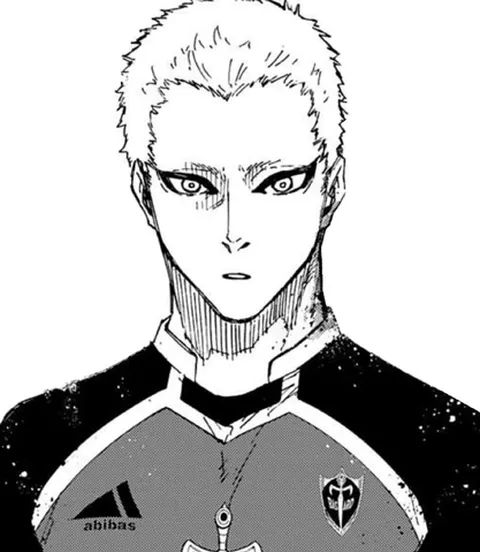

Sala II
Mangá
Cinco capítulos recontados em quadros grandes, em tradução e texto do site. Leia devagar, de cima para baixo.
-
Capítulo 1 · Antes do Blue Lock
O convite
Uma final perdida, uma carta da Federação e um treinador que quer criar o atacante mais egoísta do mundo.

-
Capítulo 2 · 1ª Seleção
Time Z
O quarto dos últimos do ranking descobre que, no Blue Lock, só o gol convence.
-
Capítulo 3 · 2ª Seleção
Devorar
Times que se desmancham a cada jogo: quem vence escolhe quem leva do derrotado.
-
Capítulo 4 · 3ª Seleção e Sub-20
Blue Lock × Sub-20
O projeto inteiro vale um jogo: o Blue Lock Eleven contra a seleção Sub-20 do Japão.

-
Capítulo 5 · NEL
Neo Egoist League
Cinco clubes europeus, cinco Master Strikers e um leilão que põe preço em cada ego.
Contém spoilers do mangá.
